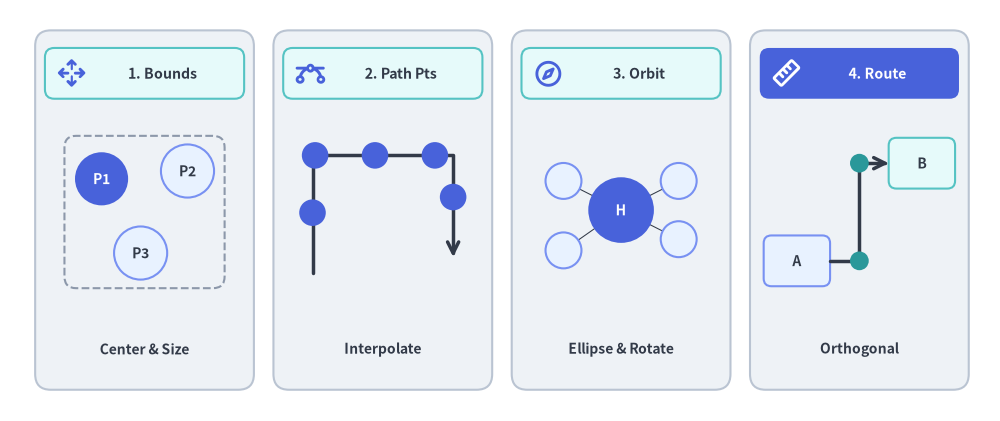
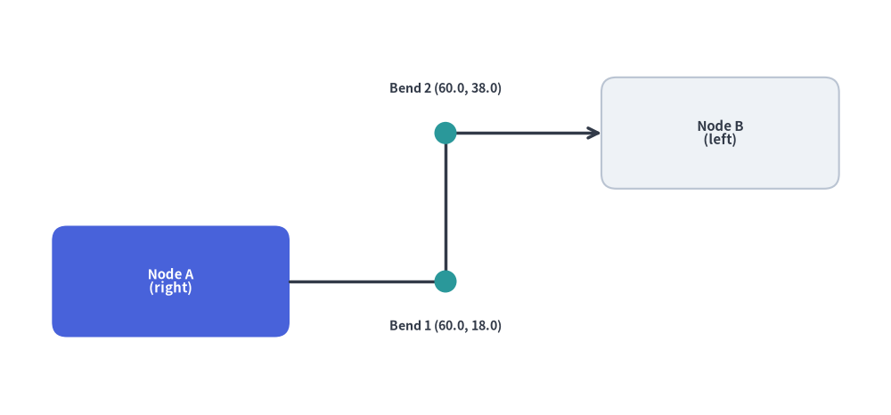
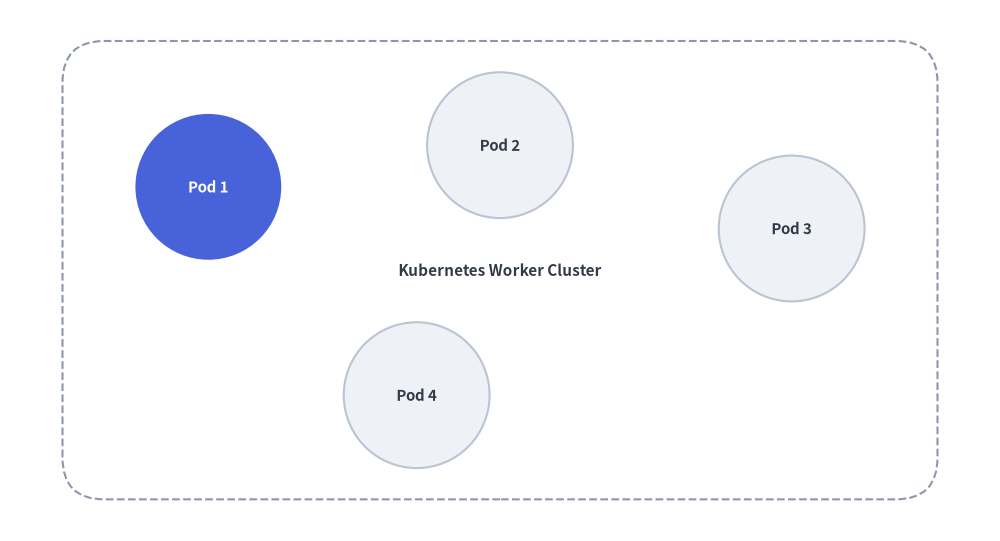
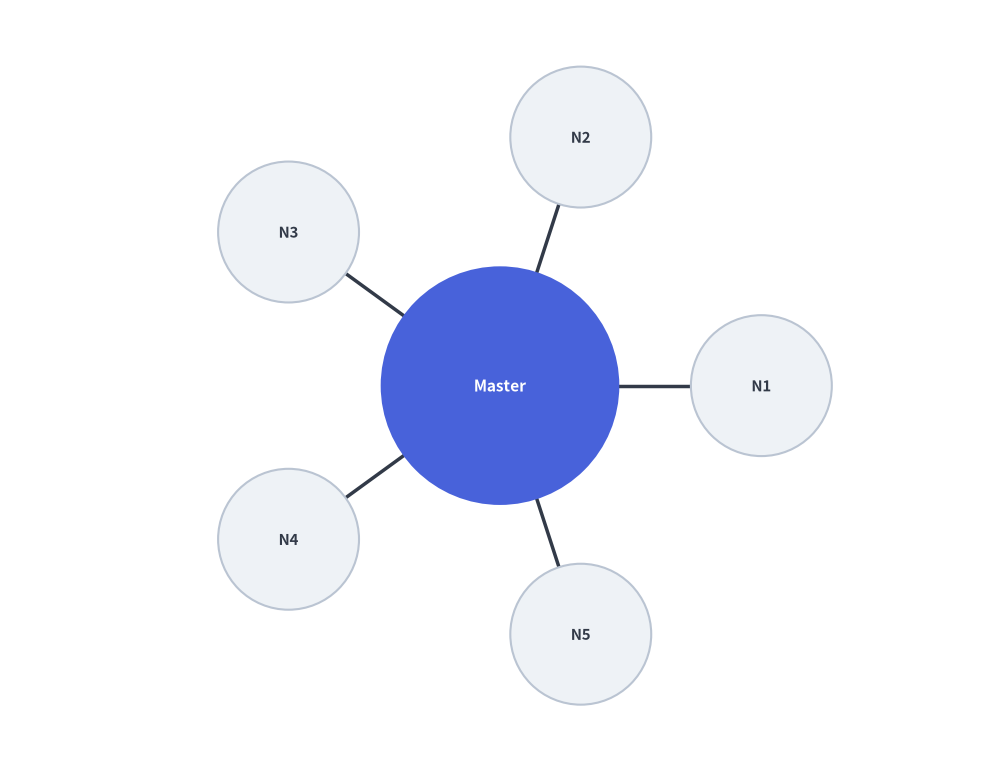
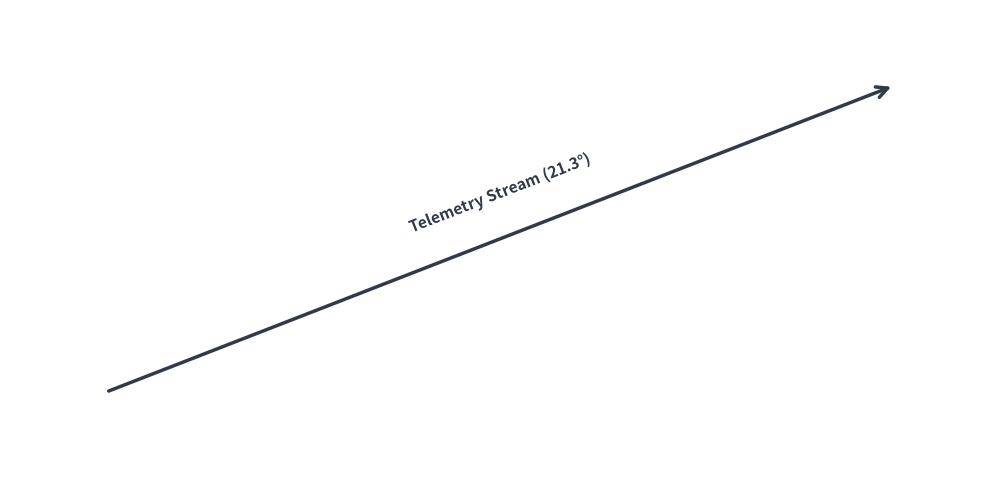

アルゴリズムレイアウトと幾何計算 (drawlib.math)
Drawlib は、技術図解における座標配置、角度の算出、距離計測、動的バウンディングボックス計算を簡潔に行うための幾何・数学ユーティリティを提供しています。
drawlib.math モジュールは、アルゴリズムによるレイアウト構築やアニメーション制御を支える4つの主要な幾何計算機能を備えています。

Source Code
from drawlib.canvas import save, setup
from drawlib.icons import phosphor
from drawlib.lines import line, lines
from drawlib.math import (
compute_orthogonal_path,
get_center_and_size,
get_intermediate_path_points,
get_point_on_ellipse,
rotate_point,
)
from drawlib.shapes import circle, rectangle
from drawlib.styles import Styles
from drawlib.text import text
setup(width=128, height=54)
# Panel 1: Dynamic Bounding Box (get_center_and_size)
rectangle((18.5, 27), width=28, height=46, style=Styles.Neutral.patch(shape_r=2.0))
rectangle((18.5, 44.5), width=25.5, height=6.5, style=Styles.SecondaryNeutral.patch(shape_r=1.2))
phosphor.arrows_out_cardinal((9.2, 44.5), width=3.8, style=Styles.PrimaryBold)
text((20.8, 44.5), "1. Bounds", style=Styles.DarkBold.patch(text_size=10.2))
pts = [(13.0, 31.0), (24.0, 32.0), (18.0, 21.5)]
(bcx, bcy), (bw, bh) = get_center_and_size(pts)
rectangle((bcx, bcy), width=bw + 9.5, height=bh + 9.0, style=Styles.MutedDashed.patch(shape_r=1.5))
for idx, pt in enumerate(pts, start=1):
st = Styles.PrimaryFlat if idx == 1 else Styles.PrimaryNeutral
tst = Styles.WhiteBold.patch(text_size=10.0) if idx == 1 else Styles.DarkBold.patch(text_size=10.0)
circle(pt, radius=3.4, style=st, text=f"P{idx}", text_style=tst)
text((18.5, 9.2), "Center & Size", style=Styles.DarkBold.patch(text_size=10.0))
# Panel 2: Polyline Path Interpolation (get_intermediate_path_points)
rectangle((49.0, 27), width=28, height=46, style=Styles.Neutral.patch(shape_r=2.0))
rectangle((49.0, 44.5), width=25.5, height=6.5, style=Styles.SecondaryNeutral.patch(shape_r=1.2))
phosphor.bezier_curve((39.7, 44.5), width=3.8, style=Styles.PrimaryBold)
text((51.3, 44.5), "2. Path Pts", style=Styles.DarkBold.patch(text_size=10.2))
poly = [(40.0, 19.0), (40.0, 34.0), (58.0, 34.0), (58.0, 21.0)]
lines(poly, style=Styles.DarkBold, arrow_head="->")
for px, py in get_intermediate_path_points(poly, num=5, include_ends=False):
circle((px, py), radius=1.7, style=Styles.PrimaryFlat)
text((49.0, 9.2), "Interpolate", style=Styles.DarkBold.patch(text_size=10.0))
# Panel 3: Radial & Elliptical Orbit (get_point_on_ellipse / rotate_point)
rectangle((79.5, 27), width=28, height=46, style=Styles.Neutral.patch(shape_r=2.0))
rectangle((79.5, 44.5), width=25.5, height=6.5, style=Styles.SecondaryNeutral.patch(shape_r=1.2))
phosphor.compass((70.2, 44.5), width=3.8, style=Styles.PrimaryBold)
text((81.8, 44.5), "3. Orbit", style=Styles.DarkBold.patch(text_size=10.2))
hub_xy = (79.5, 27.0)
sat_pts = [
get_point_on_ellipse(hub_xy, 18, 13, 35),
get_point_on_ellipse(hub_xy, 18, 13, 145),
rotate_point((88.5, 27.0), 215, center=hub_xy),
get_point_on_ellipse(hub_xy, 18, 13, 325),
]
for s_pt in sat_pts:
line(hub_xy, s_pt, style=Styles.DarkThin)
circle(hub_xy, radius=4.2, style=Styles.PrimaryFlat, text="H", text_style=Styles.WhiteBold.patch(text_size=10.0))
for s_pt in sat_pts:
circle(s_pt, radius=2.3, style=Styles.PrimaryNeutral)
text((79.5, 9.2), "Ellipse & Rotate", style=Styles.DarkBold.patch(text_size=10.0))
# Panel 4: Orthogonal Port Routing (compute_orthogonal_path)
rectangle((110.0, 27), width=28, height=46, style=Styles.Neutral.patch(shape_r=2.0))
rectangle((110.0, 44.5), width=25.5, height=6.5, style=Styles.PrimaryFlat.patch(shape_r=1.2))
phosphor.ruler((100.7, 44.5), width=3.8, style=Styles.WhiteBold)
text((112.3, 44.5), "4. Route", style=Styles.WhiteBold.patch(text_size=10.2))
rectangle(
(102.0, 20.5),
width=8.5,
height=6.5,
style=Styles.PrimaryNeutral.patch(shape_r=1.0),
text="A",
text_style=Styles.DarkBold.patch(text_size=10.0),
)
rectangle(
(118.0, 33.0),
width=8.5,
height=6.5,
style=Styles.SecondaryNeutral.patch(shape_r=1.0),
text="B",
text_style=Styles.DarkBold.patch(text_size=10.0),
)
route = compute_orthogonal_path(
start_pt=(106.25, 20.5),
end_pt=(113.75, 33.0),
start_side="right",
end_side="left",
routing="orthogonal",
offset=2.0,
)
lines(route, style=Styles.DarkBold, arrow_head="->")
for wx, wy in route[1:-1]:
circle((wx, wy), radius=1.2, style=Styles.SecondaryFlat)
text((110.0, 9.2), "Orthogonal", style=Styles.DarkBold.patch(text_size=10.0))
save()
1. インポートと主要関数一覧
距離・補間・座標変換・経路ルーティングに関するすべての公開ユーティリティは drawlib.math からインポートします。
from drawlib.math import (
# Distance, Angle & Bounding Box
get_angle, # Calculate angle in degrees [0, 360) from point A to point B
get_center_and_size, # Compute center coordinates and bounding box dimensions
get_distance, # Compute Euclidean distance between two points
# Linear & Polyline Trajectory Interpolation
get_intermediate_point, # Compute the 50% midpoint between two points
get_intermediate_points, # Compute evenly spaced points along a straight segment
get_intermediate_path_point, # Compute 50% arc-length midpoint along a polyline path
get_intermediate_path_points, # Compute evenly spaced points along a polyline path
get_intermediate_paths, # Compute progressive partial sub-paths along a polyline
# Vector Arithmetic, Rotation & Ellipse Geometry
plus_2points, # Element-wise vector addition (x1 + x2, y1 + y2)
minus_2points, # Element-wise vector subtraction (x1 - x2, y1 - y2)
rotate_point, # Rotate a single point around a center by angle in degrees
get_rotated_points, # Rotate a list of points around a center by angle in degrees
get_rotated_path_points, # Rotate path points (including Bezier control tuples)
get_point_on_ellipse, # Calculate point on ellipse perimeter at a given angle
# Orthogonal Waypoint Routing
compute_orthogonal_path, # Compute right-angled or direct waypoints between two anchors
Side, # Literal["left", "right", "top", "bottom"]
RoutingType, # Literal["direct", "orthogonal"]
)
2. 各関数の仕様
2.1 get_angle(xy1, xy2) -> float
点 xy1 から点 xy2 への反時計回りの角度（度数法）を算出します。
- 基準方向: X軸の正の方向（右・東向き）を
0°とします。 - 値域:
[0.0, 360.0)- 真右の点:
0.0° - 真上の点:
90.0° - 真左の点:
180.0° - 真下の点:
270.0°
- 真右の点:
- 主な用途: 斜めの接続線に沿ってテキストラベルを平行に回転配置したり、方向性のあるアイコンの向きを合わせたりする際に使用します。
2.2 get_distance(xy1, xy2) -> float
2点間のユークリッド距離 $\sqrt{(x_2 - x_1)^2 + (y_2 - y_1)^2}$ を算出します。
- 主な用途: 線分の長さの計算、衝突判定のしきい値評価、放射状レイアウトにおける間隔計算などに使用します。
2.3 get_center_and_size(xys) -> tuple[tuple[float, float], tuple[float, float]]
任意の座標群の外接バウンディングボックスの中心座標とサイズ（幅・高さ）を算出します。
- 戻り値:
((center_x, center_y), (width, height)) - 主な用途: 複数のサービスノード群を均等な余白（パディング）付きの背景コンテナ矩形で動的に囲む際に使用します。
2.4 get_intermediate_point(xy1, xy2) と get_intermediate_points(xy1, xy2, num=1, *, include_ends=False)
2点 xy1 と xy2 の間を線形補間した座標を算出します。
get_intermediate_point(xy1, xy2) -> tuple[float, float]: ちょうど 50% の中点座標(mx, my)を返します。get_intermediate_points(xy1, xy2, num=1, *, include_ends=False) -> list[tuple[float, float]]: 等間隔に分割したnum個の中間点リストを返します（include_ends=Trueの場合は始点xy1と終点xy2を含むnum + 2個の点）。- 主な用途: パケットが移動するアニメーションや、フレームごとに段階的に伸びるブロック矢印（
arrow(xy1, pt, ...)）・接続線の描画に使用します。
2.5 get_intermediate_path_point(xys)、get_intermediate_path_points(xys, ...) と get_intermediate_paths(xys, ...)
L字型やU字型ルートなどの複数頂点からなる折れ線経路（ポリライン）xys の総弧長に基づき、中間点や段階的な部分経路を算出します。
get_intermediate_path_point(xys) -> tuple[float, float]: 折れ線xys全体の総延長のちょうど 50% に位置する座標を返します（例: U字型経路の底辺中央など）。get_intermediate_path_points(xys, num=1, *, include_ends=False) -> list[tuple[float, float]]: 折れ線xys上を等間隔に分割したnum個の(x, y)座標リストを返します（include_ends=Trueの場合は両端を含むnum + 2個）。get_intermediate_paths(xys, num=1, *, include_ends=False) -> list[list[tuple[float, float]]]: 始点xys[0]から出発し、途中の折れ曲がり頂点を正確に経由しながら各ステップの先端で終わるnum個の部分経路リスト[(x0, y0), ..., (xt, yt)]を返します（include_ends=Trueの場合は完全なxysも末尾に含みます）。L字・U字ルートに沿ってlines()、lines_curved()、arrow_polyline()を伸ばすアニメーションに最適です。
2.6 ベクトル演算・回転・楕円ジオメトリ関数
plus_2points(xy1, xy2)/minus_2points(xy1, xy2): 2次元座標の要素ごとの加算(x1 + x2, y1 + y2)および減算(x1 - x2, y1 - y2)を行います。rotate_point(xy, angle, center=(0.0, 0.0)): 点centerを中心として座標xyを反時計回りにangle度回転させます。get_rotated_points(xys, center, angle)/get_rotated_path_points(path_points, center, angle): 多角形の頂点リストやベジェ曲線の制御点を含むパス頂点群をcenterの周りに一括回転させます。get_point_on_ellipse(center, width, height, angle): サイズ(width, height)の楕円周上における角度angle度（0°= 右、90°= 上）の境界点(x, y)を算出します。
2.7 直交ウェイポイントルーティング (compute_orthogonal_path)
2つのアンカー座標とそれぞれの出発面・到着面（"left"、"right"、"top"、"bottom"）を指定して、直角に折れ曲がる経路（"orthogonal"）または直線経路（"direct"）のウェイポイント列を自動計算します。
from drawlib.canvas import save, setup
from drawlib.lines import lines
from drawlib.math import compute_orthogonal_path
from drawlib.shapes import circle, rectangle
from drawlib.styles import Styles
from drawlib.text import text
setup(width=120, height=56)
# 1. Draw anchor nodes (Node A right edge = 39.0, Node B left edge = 81.0)
rectangle(
(23, 18),
width=32,
height=15,
style=Styles.PrimaryFlat.patch(shape_r=2.0),
text="Node A\n(right)",
text_style=Styles.WhiteBold.patch(text_size=10.8),
)
rectangle(
(97, 38),
width=32,
height=15,
style=Styles.Neutral.patch(shape_r=2.0),
text="Node B\n(left)",
text_style=Styles.DarkBold.patch(text_size=10.8),
)
# 2. Compute orthogonal Z-bend waypoints
waypoints = compute_orthogonal_path(
start_pt=(39.0, 18.0),
end_pt=(81.0, 38.0),
start_side="right",
end_side="left",
routing="orthogonal",
offset=3.0,
)
# 3. Render orthogonal connector and intermediate bend markers
lines(waypoints, style=Styles.DarkBold, arrow_head="->")
for wx, wy in waypoints[1:-1]:
circle((wx, wy), radius=1.5, style=Styles.SecondaryFlat)
text((60.0, 12.0), "Bend 1 (60.0, 18.0)", style=Styles.DarkBold.patch(text_size=10.2))
text((60.0, 44.0), "Bend 2 (60.0, 38.0)", style=Styles.DarkBold.patch(text_size=10.2))
save()

3. 動的な自動グルーピング枠の描画
get_center_and_size() を使うと、複数のサービスノード群の外接領域を動的に計算し、それらを囲む背景コンテナカードを自動配置できます。
from drawlib.canvas import save, setup
from drawlib.math import get_center_and_size
from drawlib.shapes import circle, rectangle
from drawlib.styles import Styles
setup(width=96, height=52)
# 1. Define service node positions
nodes = [(20, 34), (48, 38), (76, 30), (40, 14)]
# 2. Calculate dynamic bounding box
(cx, cy), (bw, bh) = get_center_and_size(nodes)
# 3. Draw background container with +28 width and +20 height padding
rectangle(
(cx, cy),
width=bw + 28,
height=bh + 20,
style=Styles.MutedDashed.patch(shape_r=4),
text="Kubernetes Worker Cluster",
text_style=Styles.DarkBold.patch(text_size=11.0),
)
# 4. Render nodes
for i, (x, y) in enumerate(nodes, start=1):
st = Styles.PrimaryFlat if i == 1 else Styles.Neutral
t_st = Styles.WhiteBold.patch(text_size=10.8) if i == 1 else Styles.DarkBold.patch(text_size=10.8)
circle((x, y), radius=7.0, style=st, text=f"Pod {i}", text_style=t_st)
save()

4. 円周上の放射状ノード配置
中央のハブの周囲に $N$ 個のワーカーノードを対称に放射配置する例です。
import math
from drawlib.canvas import save, setup
from drawlib.lines import line
from drawlib.math import get_angle, get_distance
from drawlib.shapes import circle
from drawlib.styles import Styles
setup(width=88, height=68)
hub = (44, 34)
radius = 23
num_clients = 5
# 1. Draw spoke lines and surrounding worker nodes first
for i in range(num_clients):
angle_rad = 2 * math.pi * i / num_clients
node_xy = (hub[0] + radius * math.cos(angle_rad), hub[1] + radius * math.sin(angle_rad))
# Calculate connection angle and distance
dist = get_distance(hub, node_xy)
angle_deg = get_angle(hub, node_xy)
line(hub, node_xy, style=Styles.DarkBold)
circle(node_xy, radius=6.2, style=Styles.Neutral, text=f"N{i+1}", text_style=Styles.DarkBold.patch(text_size=10.8))
# 2. Draw Central Hub on top so spoke lines do not cross label text
circle(hub, radius=10.5, style=Styles.PrimaryFlat, text="Master", text_style=Styles.WhiteBold.patch(text_size=11.2))
save()

5. 斜めの接続線に沿ったテキストラベル回転
get_angle() を使用して、角度のついた接続線と平行になるようにテキストラベルを回転配置します。
from drawlib.canvas import save, setup
from drawlib.lines import line
from drawlib.math import get_angle
from drawlib.styles import Styles
from drawlib.text import text
setup(width=92, height=44)
p1 = (10, 8)
p2 = (82, 36)
# Draw slanted wire
line(p1, p2, arrow_head="->", style=Styles.DarkBold)
# Calculate rotation angle and midpoint
angle = get_angle(p1, p2)
midpoint = ((p1[0] + p2[0]) / 2, (p1[1] + p2[1]) / 2 + 4.2)
# Render rotated text parallel to the connection
text(midpoint, f"Telemetry Stream ({angle:.1f}°)", style=Styles.DarkBold.patch(angle=angle, text_size=11.2))
save()
